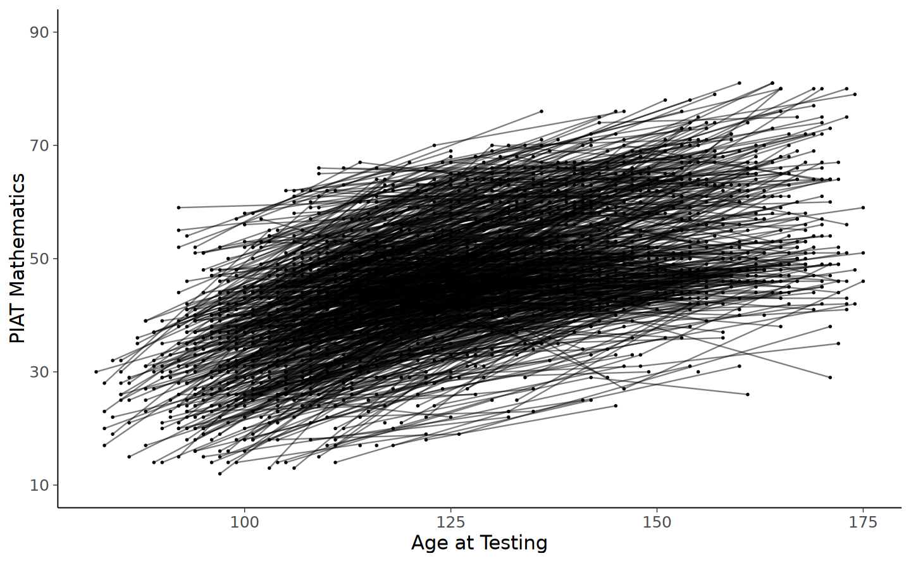
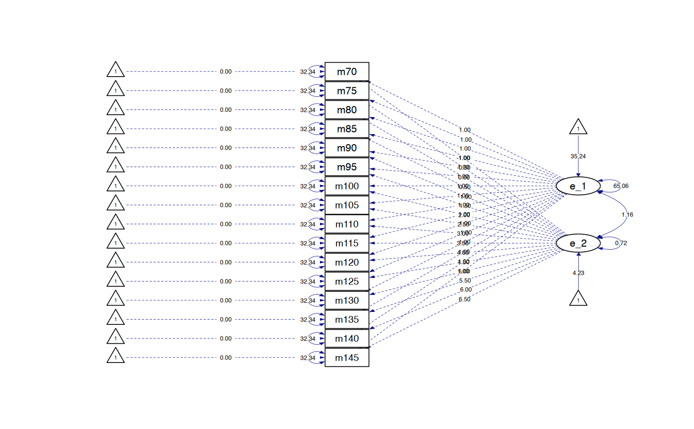

here::here("code", "_common.R") |>
source()
# Load packages
if (!requireNamespace("pacman")) install.packages("pacman")
pacman::p_load(DT, kableExtra, lme4, emmeans)Caricamento dei namespace richiesti: pacman
Prerequisiti
Concetti e Competenze Chiave
Preparazione del Notebook
here::here("code", "_common.R") |>
source()
# Load packages
if (!requireNamespace("pacman")) install.packages("pacman")
pacman::p_load(DT, kableExtra, lme4, emmeans)Caricamento dei namespace richiesti: pacman
Quando si affronta lo studio del cambiamento in un individuo, un aspetto cruciale è la selezione di una scala temporale adeguata per osservare questo cambiamento. Nel capitolo precedente, ad esempio, abbiamo adottato il grado scolastico come nostra scala temporale di riferimento, strutturando le osservazioni su questa base. Tuttavia, il grado scolastico non è l’unica scala temporale applicabile a tali dati. Altre scale significative potrebbero essere l’età o le specifiche occasioni in cui si effettuano le misurazioni.
Ci sono scale temporali che rappresentano intervalli discreti, come le occasioni di misurazione, dove i valori assunti sono specifici e comuni tra i partecipanti. In questo contesto, però, potrebbe non essere possibile valutare ogni partecipante ad ogni occasione di misurazione. D’altra parte, esistono scale temporali più fluide, come l’età, dove i valori sono unici per ciascun partecipante e non condivisi.
Interessante è notare come la stessa scala temporale possa essere impiegata sia in un contesto discreto che continuo. Ad esempio, l’età può essere approssimata all’anno più vicino, mentre il grado scolastico può essere definito più precisamente, considerando l’anno scolastico e il numero di giorni trascorsi dall’inizio dell’anno scolastico.
In questo capitolo, ci concentreremo sulle tecniche per modellare la crescita individuale utilizzando una scala temporale continua, esplorando come questa possa fornire una comprensione più dettagliata e sfumata del cambiamento all’interno della persona.
Proseguendo nell’analisi delle metriche del tempo, un approccio interessante è quello della finestra temporale, particolarmente utile per dati che presentano occasioni di misurazione variabili individualmente. Questa metodologia cerca di standardizzare la variabilità temporale individuale su una scala temporale discreta. Un esempio pratico di questo può essere visto nell’arrotondamento dell’età o del tempo al semestre o al quarto d’anno più vicino.
Questo metodo, benché utile, rappresenta ancora un’approssimazione della realtà temporale. Riducendo la dimensione delle finestre temporali si può aumentare la precisione, ma questo può comportare una maggiore dispersione dei dati, rendendo così più complessa l’accuratezza delle stime.
Nell’applicazione pratica di questo esempio, definiamo le finestre temporali in termini di semestri. Pertanto, lavoriamo con i dati in formato long, arrotondando l’età al semestre più vicino, e successivamente convertiamo questi dati in formato wide. Questo consente la loro integrazione nel framework SEM, facilitando l’analisi e l’interpretazione dei cambiamenti individuali nel tempo.
Per questo esempio considereremo i dati di abilità matematica NLSY-CYA Long Data [si veda {cite:t}grimm2016growth]. Iniziamo a leggere i dati.
#set filepath for data file
filepath <- "https://raw.githubusercontent.com/LRI-2/Data/main/GrowthModeling/nlsy_math_long_R.dat"
#read in the text data file using the url() function
dat <- read.table(file=url(filepath),
na.strings = ".") #indicates the missing data designator
#copy data with new name
nlsy_math_long <- dat
#Add names the columns of the data set
names(nlsy_math_long) = c('id' , 'female', 'lb_wght',
'anti_k1', 'math' , 'grade' ,
'occ' , 'age' , 'men' ,
'spring' , 'anti')
#subset to the variables of interest
nlsy_math_long <- nlsy_math_long[ ,c("id", "math", "grade", "age")]
#view the first few observations in the data set
head(nlsy_math_long, 10)| id | math | grade | age | |
|---|---|---|---|---|
| <int> | <int> | <int> | <int> | |
| 1 | 201 | 38 | 3 | 111 |
| 2 | 201 | 55 | 5 | 135 |
| 3 | 303 | 26 | 2 | 121 |
| 4 | 303 | 33 | 5 | 145 |
| 5 | 2702 | 56 | 2 | 100 |
| 6 | 2702 | 58 | 4 | 125 |
| 7 | 2702 | 80 | 8 | 173 |
| 8 | 4303 | 41 | 3 | 115 |
| 9 | 4303 | 58 | 4 | 135 |
| 10 | 5002 | 46 | 4 | 117 |
#intraindividual change trajetories
ggplot(data=nlsy_math_long, #data set
aes(x = age, y = math, group = id)) + #setting variables
geom_point(size=.5) + #adding points to plot
geom_line(alpha = 0.5) + #adding lines to plot
#setting the x-axis with breaks and labels
scale_x_continuous(#limits=c(2,8),
#breaks = c(2,3,4,5,6,7,8),
name = "Age at Testing") +
#setting the y-axis with limits breaks and labels
scale_y_continuous(limits=c(10,90),
breaks = c(10,30,50,70,90),
name = "PIAT Mathematics")
Implementiamo il metodo della finestra temporale e ricodifichiamo i dati in formato wide.
# creating new age variable scaled in years
nlsy_math_long$ageyr <- (nlsy_math_long$age / 12)
head(nlsy_math_long)| id | math | grade | age | ageyr | |
|---|---|---|---|---|---|
| <int> | <int> | <int> | <int> | <dbl> | |
| 1 | 201 | 38 | 3 | 111 | 9.250000 |
| 2 | 201 | 55 | 5 | 135 | 11.250000 |
| 3 | 303 | 26 | 2 | 121 | 10.083333 |
| 4 | 303 | 33 | 5 | 145 | 12.083333 |
| 5 | 2702 | 56 | 2 | 100 | 8.333333 |
| 6 | 2702 | 58 | 4 | 125 | 10.416667 |
# rounding to nearest half-year
# multiplied by 10 to remove decimal for easy conversion to wide
nlsy_math_long$agewindow <- plyr::round_any(nlsy_math_long$ageyr * 10, 5)
head(nlsy_math_long)| id | math | grade | age | ageyr | agewindow | |
|---|---|---|---|---|---|---|
| <int> | <int> | <int> | <int> | <dbl> | <dbl> | |
| 1 | 201 | 38 | 3 | 111 | 9.250000 | 90 |
| 2 | 201 | 55 | 5 | 135 | 11.250000 | 110 |
| 3 | 303 | 26 | 2 | 121 | 10.083333 | 100 |
| 4 | 303 | 33 | 5 | 145 | 12.083333 | 120 |
| 5 | 2702 | 56 | 2 | 100 | 8.333333 | 85 |
| 6 | 2702 | 58 | 4 | 125 | 10.416667 | 105 |
# reshaping long to wide (just variables of interest)
nlsy_math_wide <- reshape(
data = nlsy_math_long[, c("id", "math", "agewindow")],
timevar = c("agewindow"),
idvar = c("id"),
v.names = c("math"),
direction = "wide", sep = ""
)
# reordering columns for easy viewing
nlsy_math_wide <- nlsy_math_wide[, c(
"id", "math70", "math75", "math80", "math85", "math90", "math95", "math100", "math105", "math110", "math115", "math120", "math125", "math130", "math135", "math140", "math145"
)]
# looking at the data
head(nlsy_math_wide)| id | math70 | math75 | math80 | math85 | math90 | math95 | math100 | math105 | math110 | math115 | math120 | math125 | math130 | math135 | math140 | math145 | |
|---|---|---|---|---|---|---|---|---|---|---|---|---|---|---|---|---|---|
| <int> | <int> | <int> | <int> | <int> | <int> | <int> | <int> | <int> | <int> | <int> | <int> | <int> | <int> | <int> | <int> | <int> | |
| 1 | 201 | NA | NA | NA | NA | 38 | NA | NA | NA | 55 | NA | NA | NA | NA | NA | NA | NA |
| 3 | 303 | NA | NA | NA | NA | NA | NA | 26 | NA | NA | NA | 33 | NA | NA | NA | NA | NA |
| 5 | 2702 | NA | NA | NA | 56 | NA | NA | NA | 58 | NA | NA | NA | NA | NA | NA | NA | 80 |
| 8 | 4303 | NA | NA | NA | NA | NA | 41 | NA | NA | 58 | NA | NA | NA | NA | NA | NA | NA |
| 10 | 5002 | NA | NA | NA | NA | NA | NA | 46 | NA | NA | NA | 54 | NA | NA | NA | 66 | NA |
| 13 | 5005 | NA | NA | 35 | NA | NA | 50 | NA | NA | NA | 60 | NA | NA | NA | 59 | NA | NA |
Specifichiamo il modello SEM.
lg_math_age_lavaan_model <- '
# latent variable definitions
#intercept (note intercept is a reserved term)
eta_1 =~ 1*math70 +
1*math75 +
1*math80 +
1*math85 +
1*math90 +
1*math95 +
1*math100 +
1*math105 +
1*math110 +
1*math115 +
1*math120 +
1*math125 +
1*math130 +
1*math135 +
1*math140 +
1*math145
#linear slope (note intercept is a reserved term)
eta_2 =~ -1*math70 +
-0.5*math75 +
0*math80 +
0.5*math85 +
1*math90 +
1.5*math95 +
2*math100 +
2.5*math105 +
3*math110 +
3.5*math115 +
4*math120 +
4.5*math125 +
5*math130 +
5.5*math135 +
6*math140 +
6.5*math145
# factor variances
eta_1 ~~ start(65)*eta_1
eta_2 ~~ start(.75)*eta_2
# covariances among factors
eta_1 ~~ start(1.2)*eta_2
# manifest variances (made equivalent by naming theta)
math70 ~~ start(35)*theta*math70
math75 ~~ theta*math75
math80 ~~ theta*math80
math85 ~~ theta*math85
math90 ~~ theta*math90
math95 ~~ theta*math95
math100 ~~ theta*math100
math105 ~~ theta*math105
math110 ~~ theta*math110
math115 ~~ theta*math115
math120 ~~ theta*math120
math125 ~~ theta*math125
math130 ~~ theta*math130
math135 ~~ theta*math135
math140 ~~ theta*math140
math145 ~~ theta*math145
# manifest means (fixed at zero)
math70 ~ 0*1
math75 ~ 0*1
math80 ~ 0*1
math85 ~ 0*1
math90 ~ 0*1
math95 ~ 0*1
math100 ~ 0*1
math105 ~ 0*1
math110 ~ 0*1
math115 ~ 0*1
math120 ~ 0*1
math125 ~ 0*1
math130 ~ 0*1
math135 ~ 0*1
math140 ~ 0*1
math145 ~ 0*1
# factor means (estimated freely)
eta_1 ~ start(35)*1
eta_2 ~ start(4)*1
' #end of model definitionIn questo modello, si definiscono due variabili latenti: l’intercetta latente (eta_1) e la pendenza lineare (eta_2). La scelta dei coefficienti per eta_2 consente di modellare una traiettoria di crescita lineare nel tempo. Ogni coefficiente corrisponde al peso assegnato a ciascuna misura di matematica (math70, math75, …, math145) nell’espressione della pendenza lineare.
-1 a 6.5, aumentando di 0.5 ad ogni passaggio. Questa progressione rappresenta l’aumento lineare nel tempo. Ad esempio, math70 ha un coefficiente di -1, math75 ha un coefficiente di -0.5, e così via fino a math145, che ha un coefficiente di 6.5.0.5 tra i coefficienti di math70 e math75 implica che il lasso di tempo tra queste due misurazioni è costante rispetto alle altre misurazioni.math80 è 0. Questo implica che math80 è stato scelto come punto di riferimento o centro per la pendenza lineare. I valori negativi e positivi dei coefficienti rappresentano misurazioni prima e dopo questo punto di riferimento, rispettivamente.Adattiamo il modello ai dati.
#estimating the model using sem() function
lg_math_age_lavaan_fit <- sem(lg_math_age_lavaan_model,
data = nlsy_math_wide,
meanstructure = TRUE,
estimator = "ML",
missing = "fiml"
)Warning message:
"lavaan->lav_data_full():
due to missing values, some pairwise combinations have less than 10%
coverage; use lavInspect(fit, "coverage") to investigate."
Warning message:
"lavaan->lav_mvnorm_missing_h1_estimate_moments():
Maximum number of iterations reached when computing the sample moments
using EM; use the em.h1.iter.max= argument to increase the number of
iterations"Esaminiamo la soluzione.
summary(lg_math_age_lavaan_fit, fit.measures = TRUE) |>
print()Warning message in pchisq(X2, df = df, ncp = ncp):
"Si `e prodotto un NaN"
Warning message in pchisq(X2, df = df, ncp = ncp):
"Si `e prodotto un NaN"lavaan 0.6-19 ended normally after 40 iterations
Estimator ML
Optimization method NLMINB
Number of model parameters 21
Number of equality constraints 15
Number of observations 932
Number of missing patterns 139
Model Test User Model:
Test statistic 295.028
Degrees of freedom 146
P-value (Chi-square) 0.000
Model Test Baseline Model:
Test statistic 1053.342
Degrees of freedom 120
P-value 0.000
User Model versus Baseline Model:
Comparative Fit Index (CFI) 0.840
Tucker-Lewis Index (TLI) 0.869
Robust Comparative Fit Index (CFI) 0.003
Robust Tucker-Lewis Index (TLI) 0.181
Loglikelihood and Information Criteria:
Loglikelihood user model (H0) -7928.559
Loglikelihood unrestricted model (H1) -7781.045
Akaike (AIC) 15869.117
Bayesian (BIC) 15898.141
Sample-size adjusted Bayesian (SABIC) 15879.086
Root Mean Square Error of Approximation:
RMSEA 0.033
90 Percent confidence interval - lower 0.028
90 Percent confidence interval - upper 0.039
P-value H_0: RMSEA <= 0.050 1.000
P-value H_0: RMSEA >= 0.080 0.000
Robust RMSEA 4.193
90 Percent confidence interval - lower 0.000
90 Percent confidence interval - upper 0.000
P-value H_0: Robust RMSEA <= 0.050 NaN
P-value H_0: Robust RMSEA >= 0.080 NaN
Standardized Root Mean Square Residual:
SRMR 0.314
Parameter Estimates:
Standard errors Standard
Information Observed
Observed information based on Hessian
Latent Variables:
Estimate Std.Err z-value P(>|z|)
eta_1 =~
math70 1.000
math75 1.000
math80 1.000
math85 1.000
math90 1.000
math95 1.000
math100 1.000
math105 1.000
math110 1.000
math115 1.000
math120 1.000
math125 1.000
math130 1.000
math135 1.000
math140 1.000
math145 1.000
eta_2 =~
math70 -1.000
math75 -0.500
math80 0.000
math85 0.500
math90 1.000
math95 1.500
math100 2.000
math105 2.500
math110 3.000
math115 3.500
math120 4.000
math125 4.500
math130 5.000
math135 5.500
math140 6.000
math145 6.500
Covariances:
Estimate Std.Err z-value P(>|z|)
eta_1 ~~
eta_2 1.157 1.010 1.146 0.252
Intercepts:
Estimate Std.Err z-value P(>|z|)
.math70 0.000
.math75 0.000
.math80 0.000
.math85 0.000
.math90 0.000
.math95 0.000
.math100 0.000
.math105 0.000
.math110 0.000
.math115 0.000
.math120 0.000
.math125 0.000
.math130 0.000
.math135 0.000
.math140 0.000
.math145 0.000
eta_1 35.236 0.347 101.512 0.000
eta_2 4.229 0.081 51.910 0.000
Variances:
Estimate Std.Err z-value P(>|z|)
eta_1 65.063 5.503 11.824 0.000
eta_2 0.725 0.277 2.616 0.009
.math70 (thet) 32.337 1.695 19.083 0.000
.math75 (thet) 32.337 1.695 19.083 0.000
.math80 (thet) 32.337 1.695 19.083 0.000
.math85 (thet) 32.337 1.695 19.083 0.000
.math90 (thet) 32.337 1.695 19.083 0.000
.math95 (thet) 32.337 1.695 19.083 0.000
.math100 (thet) 32.337 1.695 19.083 0.000
.math105 (thet) 32.337 1.695 19.083 0.000
.math110 (thet) 32.337 1.695 19.083 0.000
.math115 (thet) 32.337 1.695 19.083 0.000
.math120 (thet) 32.337 1.695 19.083 0.000
.math125 (thet) 32.337 1.695 19.083 0.000
.math130 (thet) 32.337 1.695 19.083 0.000
.math135 (thet) 32.337 1.695 19.083 0.000
.math140 (thet) 32.337 1.695 19.083 0.000
.math145 (thet) 32.337 1.695 19.083 0.000
parameterEstimates(lg_math_age_lavaan_fit) |>
print() lhs op rhs label est se z pvalue ci.lower ci.upper
1 eta_1 =~ math70 1.000 0.000 NA NA 1.000 1.000
2 eta_1 =~ math75 1.000 0.000 NA NA 1.000 1.000
3 eta_1 =~ math80 1.000 0.000 NA NA 1.000 1.000
4 eta_1 =~ math85 1.000 0.000 NA NA 1.000 1.000
5 eta_1 =~ math90 1.000 0.000 NA NA 1.000 1.000
6 eta_1 =~ math95 1.000 0.000 NA NA 1.000 1.000
7 eta_1 =~ math100 1.000 0.000 NA NA 1.000 1.000
8 eta_1 =~ math105 1.000 0.000 NA NA 1.000 1.000
9 eta_1 =~ math110 1.000 0.000 NA NA 1.000 1.000
10 eta_1 =~ math115 1.000 0.000 NA NA 1.000 1.000
11 eta_1 =~ math120 1.000 0.000 NA NA 1.000 1.000
12 eta_1 =~ math125 1.000 0.000 NA NA 1.000 1.000
13 eta_1 =~ math130 1.000 0.000 NA NA 1.000 1.000
14 eta_1 =~ math135 1.000 0.000 NA NA 1.000 1.000
15 eta_1 =~ math140 1.000 0.000 NA NA 1.000 1.000
16 eta_1 =~ math145 1.000 0.000 NA NA 1.000 1.000
17 eta_2 =~ math70 -1.000 0.000 NA NA -1.000 -1.000
18 eta_2 =~ math75 -0.500 0.000 NA NA -0.500 -0.500
19 eta_2 =~ math80 0.000 0.000 NA NA 0.000 0.000
20 eta_2 =~ math85 0.500 0.000 NA NA 0.500 0.500
21 eta_2 =~ math90 1.000 0.000 NA NA 1.000 1.000
22 eta_2 =~ math95 1.500 0.000 NA NA 1.500 1.500
23 eta_2 =~ math100 2.000 0.000 NA NA 2.000 2.000
24 eta_2 =~ math105 2.500 0.000 NA NA 2.500 2.500
25 eta_2 =~ math110 3.000 0.000 NA NA 3.000 3.000
26 eta_2 =~ math115 3.500 0.000 NA NA 3.500 3.500
27 eta_2 =~ math120 4.000 0.000 NA NA 4.000 4.000
28 eta_2 =~ math125 4.500 0.000 NA NA 4.500 4.500
29 eta_2 =~ math130 5.000 0.000 NA NA 5.000 5.000
30 eta_2 =~ math135 5.500 0.000 NA NA 5.500 5.500
31 eta_2 =~ math140 6.000 0.000 NA NA 6.000 6.000
32 eta_2 =~ math145 6.500 0.000 NA NA 6.500 6.500
33 eta_1 ~~ eta_1 65.063 5.503 11.824 0.000 54.278 75.849
34 eta_2 ~~ eta_2 0.725 0.277 2.616 0.009 0.182 1.268
35 eta_1 ~~ eta_2 1.157 1.010 1.146 0.252 -0.822 3.136
36 math70 ~~ math70 theta 32.337 1.695 19.083 0.000 29.016 35.658
37 math75 ~~ math75 theta 32.337 1.695 19.083 0.000 29.016 35.658
38 math80 ~~ math80 theta 32.337 1.695 19.083 0.000 29.016 35.658
39 math85 ~~ math85 theta 32.337 1.695 19.083 0.000 29.016 35.658
40 math90 ~~ math90 theta 32.337 1.695 19.083 0.000 29.016 35.658
41 math95 ~~ math95 theta 32.337 1.695 19.083 0.000 29.016 35.658
42 math100 ~~ math100 theta 32.337 1.695 19.083 0.000 29.016 35.658
43 math105 ~~ math105 theta 32.337 1.695 19.083 0.000 29.016 35.658
44 math110 ~~ math110 theta 32.337 1.695 19.083 0.000 29.016 35.658
45 math115 ~~ math115 theta 32.337 1.695 19.083 0.000 29.016 35.658
46 math120 ~~ math120 theta 32.337 1.695 19.083 0.000 29.016 35.658
47 math125 ~~ math125 theta 32.337 1.695 19.083 0.000 29.016 35.658
48 math130 ~~ math130 theta 32.337 1.695 19.083 0.000 29.016 35.658
49 math135 ~~ math135 theta 32.337 1.695 19.083 0.000 29.016 35.658
50 math140 ~~ math140 theta 32.337 1.695 19.083 0.000 29.016 35.658
51 math145 ~~ math145 theta 32.337 1.695 19.083 0.000 29.016 35.658
52 math70 ~1 0.000 0.000 NA NA 0.000 0.000
53 math75 ~1 0.000 0.000 NA NA 0.000 0.000
54 math80 ~1 0.000 0.000 NA NA 0.000 0.000
55 math85 ~1 0.000 0.000 NA NA 0.000 0.000
56 math90 ~1 0.000 0.000 NA NA 0.000 0.000
57 math95 ~1 0.000 0.000 NA NA 0.000 0.000
58 math100 ~1 0.000 0.000 NA NA 0.000 0.000
59 math105 ~1 0.000 0.000 NA NA 0.000 0.000
60 math110 ~1 0.000 0.000 NA NA 0.000 0.000
61 math115 ~1 0.000 0.000 NA NA 0.000 0.000
62 math120 ~1 0.000 0.000 NA NA 0.000 0.000
63 math125 ~1 0.000 0.000 NA NA 0.000 0.000
64 math130 ~1 0.000 0.000 NA NA 0.000 0.000
65 math135 ~1 0.000 0.000 NA NA 0.000 0.000
66 math140 ~1 0.000 0.000 NA NA 0.000 0.000
67 math145 ~1 0.000 0.000 NA NA 0.000 0.000
68 eta_1 ~1 35.236 0.347 101.512 0.000 34.556 35.917
69 eta_2 ~1 4.229 0.081 51.910 0.000 4.069 4.389inspect(lg_math_age_lavaan_fit, what="est") |>
print()$lambda
eta_1 eta_2
math70 1 -1.0
math75 1 -0.5
math80 1 0.0
math85 1 0.5
math90 1 1.0
math95 1 1.5
math100 1 2.0
math105 1 2.5
math110 1 3.0
math115 1 3.5
math120 1 4.0
math125 1 4.5
math130 1 5.0
math135 1 5.5
math140 1 6.0
math145 1 6.5
$theta
math70 math75 math80 math85 math90 math95 mth100 mth105 mth110
math70 32.337
math75 0.000 32.337
math80 0.000 0.000 32.337
math85 0.000 0.000 0.000 32.337
math90 0.000 0.000 0.000 0.000 32.337
math95 0.000 0.000 0.000 0.000 0.000 32.337
math100 0.000 0.000 0.000 0.000 0.000 0.000 32.337
math105 0.000 0.000 0.000 0.000 0.000 0.000 0.000 32.337
math110 0.000 0.000 0.000 0.000 0.000 0.000 0.000 0.000 32.337
math115 0.000 0.000 0.000 0.000 0.000 0.000 0.000 0.000 0.000
math120 0.000 0.000 0.000 0.000 0.000 0.000 0.000 0.000 0.000
math125 0.000 0.000 0.000 0.000 0.000 0.000 0.000 0.000 0.000
math130 0.000 0.000 0.000 0.000 0.000 0.000 0.000 0.000 0.000
math135 0.000 0.000 0.000 0.000 0.000 0.000 0.000 0.000 0.000
math140 0.000 0.000 0.000 0.000 0.000 0.000 0.000 0.000 0.000
math145 0.000 0.000 0.000 0.000 0.000 0.000 0.000 0.000 0.000
mth115 mth120 mth125 mth130 mth135 mth140 mth145
math70
math75
math80
math85
math90
math95
math100
math105
math110
math115 32.337
math120 0.000 32.337
math125 0.000 0.000 32.337
math130 0.000 0.000 0.000 32.337
math135 0.000 0.000 0.000 0.000 32.337
math140 0.000 0.000 0.000 0.000 0.000 32.337
math145 0.000 0.000 0.000 0.000 0.000 0.000 32.337
$psi
eta_1 eta_2
eta_1 65.063
eta_2 1.157 0.725
$nu
intrcp
math70 0
math75 0
math80 0
math85 0
math90 0
math95 0
math100 0
math105 0
math110 0
math115 0
math120 0
math125 0
math130 0
math135 0
math140 0
math145 0
$alpha
intrcp
eta_1 35.236
eta_2 4.229
Creiamo un diagramma di percorso.
lg_math_age_lavaan_fit |>
semPaths(
style = "ram",
whatLabels = "par", edge.label.cex = .6,
label.prop = 0.9, edge.label.color = "black", rotation = 4,
equalizeManifests = FALSE, optimizeLatRes = TRUE, node.width = 1.5,
edge.width = 0.5, shapeMan = "rectangle", shapeLat = "ellipse",
shapeInt = "triangle", sizeMan = 4, sizeInt = 2, sizeLat = 4,
curve = 2, unCol = "#070b8c"
)